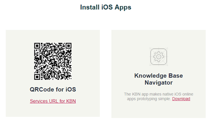

Executing From QR Codes
When you run your application (F5 or "Run" in the GeneXus menu bar) without Startup Object, the web application Developer Menu will be opened in the browser.
Option 1 - Browse Web Objects
List the web objects in the Knowledge Base, such as Transactions, Web Panels, Work With Web, etc. This information is only accessible from a web browser.
Option 2 - Install iOS Apps
Display the QR Code for scanning the application from an iOS device that has KBN installed. If you don't have the KBN installed in your device, you can download it from the Developer Menu in the corresponding option. Once you've scanned the QR Code, KBN will add the application to its catalog, and the tester can execute it.

The Service URL must be visible from the device. To do this, you have two ways:
- Deploy to the cloud. See this for more information: Deploy to cloud: Step by Step.
- To use a Wifi or a network to connect the device to the computer where the application is running.
Option 3 - Install Android Apps
Display a QR Code for each application (main smart device object) in the Knowledge Base in order to scan its code and download its package (*.apk file).
This scenario is slightly different from the Install iOS App section. In this case, the tester must install the application manually in the device, thus in the iOS case, the tester will execute the application through KBN. There is no KBN support for the Android system. The tester must enable apps from unknown sources on the device settings, and then, install the *.apk.
If the QR Codes appear greyed out means the application was not generated nor compiled. In the example above, two of the three apps weren't generated. To do it, simply build the concerned object (Right-click > Build), Run it (F5 if it's startup object or Right-click > Run), or make a Rebuild All of the KB.
Notes
- If you set a Startup Object, when you run the application (F5/Run) the Developer Menu won't be generated nor displayed.
- You can see the Developer Menu QR Codes directly from the IDE by executing "View > Show QR Codes" from the GeneXus menu bar.
- QR Code is not available for iOS because you can't install an *.ipa file --- the file which stores an iPhone/iPad/iPod app (analogous to *.apk from Android). You must download the application from the Apple Store or install it through iTunes or other tools. Please refer to Prototyping in iOS with a compiled application for more information.
See also
- Knowledge Base Navigator
- Emulation for Android
- Execution for Android Using the Device
- Prototyping in iOS with a compiled application
Videos
 Prototyping features and Deployment of applications for Smart Devices
Prototyping features and Deployment of applications for Smart Devices
Application Deployment Tool
| Backlinks | |
| Deploy to cloud: Step by Step | Developer Menu |
| Execution for Android Using the Device | |
| Toc:Native Mobile Applications Development | QR Code |